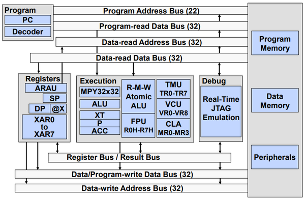
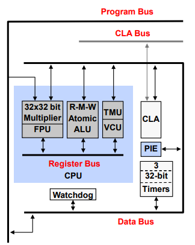
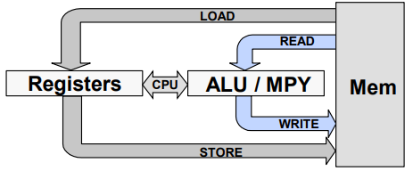
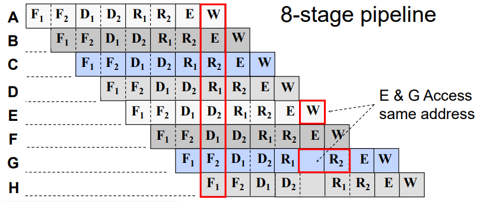
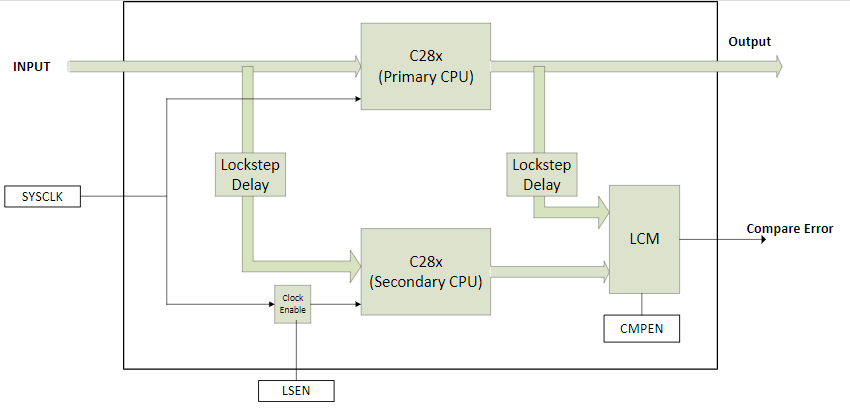

Overview of C28x Devices and Accelerators#
This introductory module includes an architectural overview of the basic architecture of the C2000™ family of real-time control microcontrollers.
C2000 real-time control MCUs feature highly integrated analog and control peripherals, which provide a complete solution for demanding real-time high performance signal processing applications, such as digital power, industrial drives, inverters, and motor control.
C28x CPU#
The C28x is a highly integrated, high performance solution for demanding control applications. It is a union between a general purpose microcontroller and a digital signal processor(DSP), balancing the code density of a RISC processor and the execution speed of a DSP with the architecture, firmware, and development tools of a microcontroller.
The MCU features include a modified Harvard architecture and circular addressing. The RISC features are single-cycle instruction execution, register-to-register operations, and a modified Harvard architecture. The microcontroller features include ease of use through an intuitive instruction set, byte packing and unpacking, and bit manipulation.
The TMS320C28x CPU and Instruction Set Reference Guide describes the central processing unit (CPU) and the assembly language instructions. Some of the major features of the CPU include:
Protected pipeline: The CPU implements an 8-phase pipeline that prevents a write to and a read from the same location from occurring out of order.
Independent register space: The CPU contains registers that are not mapped to data space. These registers function as system-control registers, math registers, and data pointers. The system-control registers are accessed by special instructions. The other registers are accessed by special instructions or by a special addressing mode (register addressing mode).
Arithmetic logic unit (ALU): The 32-bit ALU performs two’s complement arithmetic and Boolean logic operations.
Address register arithmetic unit (ARAU): The ARAU generates data-memory addresses and increments or decrements pointers in parallel with ALU operations.
Barrel shifter: This shifter performs all left and right shifts of data. It can shift data to the left by up to 16 bits and to the right by up to 16 bits.
Multiplier: The multiplier performs 32-bit × 32-bit two’s complement multiplication with a 64-bit result. The multiplication can be performed with two signed numbers, two unsigned numbers, or one signed number and one unsigned number.
The C28x design supports an efficient C engine with hardware that allows the C compiler to generate compact code. Multiple busses and an internal register bus allow an efficient and flexible way to operate on the data. The architecture is also supported by powerful addressing modes, which allow the compiler as well as the assembly programmer to generate compact code that is almost one to one corresponded to the C code.
C28x Internal Bussing#
Within each C2000 device’s datasheet is a ‘Functional Block Diagram’ of the CPU system and associated peripherals. Please refer to this diagram to understand the bus architecture for each of the different components within the device.
As with many high performance microcontrollers, multiple busses are used to move data between the memory blocks, peripherals, and the CPU. The C28x memory bus architecture consists of six buses (three address and three data):
A program read bus (22-bit address line and 32-bit data line)
A data read bus (32-bit address line and 32-bit data line)
A data write bus (32-bit address line and 32-bit data line)

The 32-bit-wide data busses provide single cycle 32-bit operations. This multiple bus architecture (Harvard Bus Architecture) enables the C28x to fetch an instruction, read a data value and write a data value in a single cycle. All peripherals and memory blocks are attached to the memory bus with prioritized memory accesses.
C28x Math Accelerators#
The C28x is also enhanced by math accelerators such as the ones below. Note that not all accelerators may be present in every device. Refer to the device datasheet for specific implementations.
Control Law Accelerator (CLA): An independent 32-bit floating-point math hardware accelerator which executes real-time control algorithms in parallel with the main C28x CPU, effectively doubling the computational performance. With direct access to the various control and communication peripherals, the CLA minimizes latency, enables a fast trigger response, and avoids CPU overhead.
Floating Point Unit (FPU): The addition of the Floating-Point Unit(FPU) to the fixed-point CPU core enables support for hardware IEEE-754 single-precision floating-point format operations. The FPU adds an extended set of floating-point registers and instructions to the standard C28x architecture, providing seamless integration of floating-point hardware into the CPU.
Trigonometric Math Unit (TMU): TMU extends the capability of the CPU to efficiently execute trigonometric and arithmetic operations commonly found in control system applications. It also provides hardware support for IEEE-754 single-precision floating point operations which accelerate trigonometric math functions.
Viterbi, Complex Math, and CRC Unit (VCU): VCU further extends the capabilities of the CPU for supporting various communication-based algorithms and is very useful for general-purpose signal processing applications, such as filtering and spectral analysis.
C28x CPU + Math Accelerators#
The figure below illustrates how the different components discussed so far in the module function together.

Summary of Key Benefits:
MCU/DSP balancing code density & execution time
16-bit instructions for improved code density
32-bit instructions for improved execution time
32-bit fixed-point CPU + FPU
32x32 fixed-point multiply-accumulate (MAC), doubles as dual 16x16 MAC
IEEE Single-precision floating point hardware and MAC
Floating-point simplifies software development and boosts performance
Viterbi, Complex Math, CRC Unit (VCU) adds support for Viterbi decode, complex math and cyclic redundancy check (CRC) operations
Parallel processing Control Law Accelerator (CLA) adds IEEE Single-precision 32-bit floating point math operations
CLA algorithm execution is independent of the main CPU
Trigonometric operations supported by TMU
Fast interrupt service time
Single cycle read-modify-write instructions
The C28x is as efficient in DSP math tasks as it is in system control tasks. This efficiency removes the need for a second processor in many systems. The 32 x 32-bit multiply-accumulate (MAC) capabilities can also support 64-bit processing, enabling the C28x to efficiently handle higher numerical resolution calculations that would otherwise demand a more expensive solution. Along with this is the capability to perform two 16 x 16-bit multiply accumulate instructions simultaneously or Dual MACs (DMAC).
Special Instructions#
Atomic instructions are a group of small common instructions which are non-interruptible. The atomic ALU capability supports instructions and code that manages tasks and processes. These instructions usually execute several cycles faster than traditional coding.

Atomic Instructions Benefits#
Simpler programming
Smaller, faster code
Uninterruptible (Atomic)
More efficient compiler
Standard Load/Store#
AND AL,#1234h
MOV *XAR2,AL
DINT
EINT
Atomic Read/Modify/Write#
AND *XAR2,#1234h
CPU Pipeline#
The C28x uses a special 8-stage protected pipeline to maximize the throughput. This protected pipeline prevents a write to and a read from the same location from occurring out of order. This pipelining also enables the C28x CPU to execute at high speeds without resorting to expensive high-speed memories. Special branch-look-ahead hardware minimizes the latency for conditional discontinuities. Special store conditional operations further improve performance. With the 8-stage pipeline most operations can be performed in a single cycle.

Peripheral Write-Read Protection#
The peripheral write-read protection is a mechanism to protect the write-read order for peripherals at different addresses. This works similar to the CPU pipeline protection of write-read order for the same address.
Suppose you need to write to a peripheral register and then read a different register for the same peripheral(e.g., write to control, read from status register)?
CPU pipeline protects W-R order for the same address
Write-Read protection mechanism protects W-R order for different addresses
Memory#
C2000 devices implement a memory map where the unified memory blocks can be accessed in either program space, data space, or both spaces. This type of memory map lends itself well for supporting high-level programming languages. The memory map structure consists of RAM blocks dedicated to the CPU, RAM blocks accessible by the CPU and CLA, RAM blocks accessible by the DMA module, message RAM blocks between the CPU and CLA, CAN message RAM blocks, flash, and one-time programmable (OTP) memory.
The Boot ROM is factory programmed with boot software routines and standard tables used in math related algorithms.
Memory Map#
The C28x CPU core contains no memory, but can access on-chip and off-chip memory. The C28x uses 32-bit data addresses and 22-bit program addresses. This allows for a total address reach of 4GB (4G words, where 1 word = 16-bits) in data memory and 4MB (4M words) in program memory.
The memory map for a device can be found within the device’s datasheet under the ‘Memory’ section of the ‘Detailed Description’ chapter. Within the Memory map will be the content for the dedicated RAM (Mx RAM), local shared RAM (LSx RAM), and global shared RAM (GSx RAM).
Dedicated RAM blocks are tightly coupled with the CPU, and only the CPU has access to them. The local shared memory blocks are accessible by the CPU and CLA. The four global shared memory blocks are accessible by the CPU and DMA.
The user OTP is a one-time-programmable memory block which contains device specific calibration data for the ADC, internal oscillators, and buffered DACs, in addition to settings used by the flash state machine for erase and program operations. Additionally, it contains locations for programming security settings, such as passwords for selectively securing memory blocks, configuring the standalone boot process, as well as selecting the boot-mode pins in case the factory-default pins cannot be used. This information is programmed into the dual code security module (DCSM). The flash memory is primarily used to store program code, but can also be used to store static data. The boot ROM and boot ROM vectors are located at the bottom of the memory map.
Multi Core Devices#
The C2000 portfolio offers single and multi-core devices. Devices which contain muli-cores are the F2837xD and F2838xD devices. Each C28x core is identical with access to its own local RAM and flash memory, as well as globally shared RAM memory. Sharing information between the two CPU cores is accomplished with an Inter-Processor Communications (IPC) module. Additionally, each core shares access to a common set of highly integrated analog and control peripherals, providing a complete solution for demanding real-time high-performance signal processing applications, such as digital power, industrial drives, inverters, and motor control.
Connectivity Manager (CM)#
Note:
This section is only applicable to the F2838x device
The F2838x device has a Connectivity Manager (CM) which is an Arm Cortex-M4 processor.The Arm Cortex-M4 processor provides a high-performance, low-cost platform that meets the system requirements of minimal memory implementation, reduced pin count, and low power consumption, while delivering outstanding computational performance and exceptional system response to interrupts.
The CM subsystem has the following:
A variety of communication peripherals: EtherCAT, Ethernet, USB, MCAN (CAN-FD), DCAN, UART, SSI, I2C, and so on.
Advance encryption standard (AES) accelerator: Provides hardware-accelerated data encryption and decryption operations based on a binary key.
Generic Cyclic Redundancy Check (GCRC) module: Computes the CRC value for a configurable block of memory.
CM Nonmaskable Interrupt (CMNMI) module: Allows the CM subsystem to detect all serious errors that could occur in the entire system(including all of the subsystems), and informing the main CPU core about the errors.
Lockstep Comparator Module (LCM)#
Note:
This section is only applicable to the F280015x device
Ensuring integrity of hardware modules during run-time is a critical functional-safety requirement. In a lockstep CPU architecture, hardware redundancy is achieved by two CPUs executing the same instruction and the output of the CPUs being continuously compared. This is a proven method for achieving high diagnostic coverage for both permanent and transient faults. The lock-step architecture is implemented by the Lockstep Comparator Module (LCM), which compares the output from both CPUs to detect permanent and transient faults. It must be emphasized that both cores are executing the same code. In other words, it is not possible to run different codes on the two cores. Contrast this with devices such as F2837xD or F2838xD, where the two C28x CPUs are independent of each other and hence it is possible to run different codes on the two cores.

The LCM implements the following features:
Pipelined architecture
Redundant comparison
Self-test capability
Match and mismatch test
Error forcing capability
Temporal redundancy: The operation of the two modules is skewed by two cycles to address the issue of common cause failures like failure of clock, power, etc. This ensures temporal redundancy.
Spatial redundancy: Each module is physically separate, which provides spatial redundancy”
Non-delayed functional output path to provide non-delayed CPU execution for the system (while still having temporal redundancy).
Register protection of critical memory mapped registers of the module, using a parity scheme.
Upon an error generated by the LCM module, a system-level NMI is triggered. In systems that do not require the redundant module for functional safety requirements, the LCM redundant module can be disabled for additional power savings.
Resources#
Feedback
Please provide any feedback you may have about the content within C2000 Academy to: c2000_academy_feedback@list.ti.com